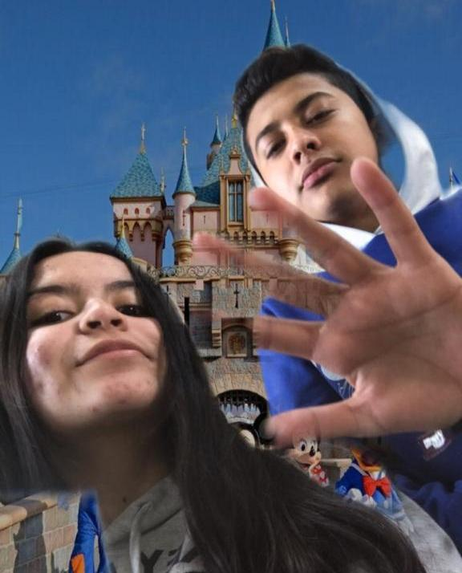
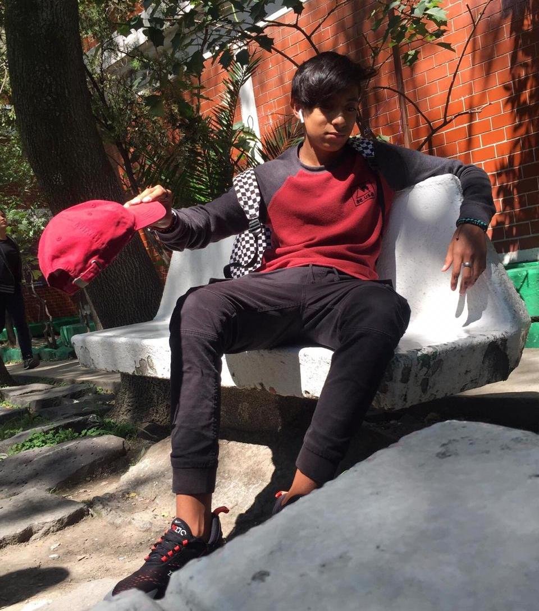
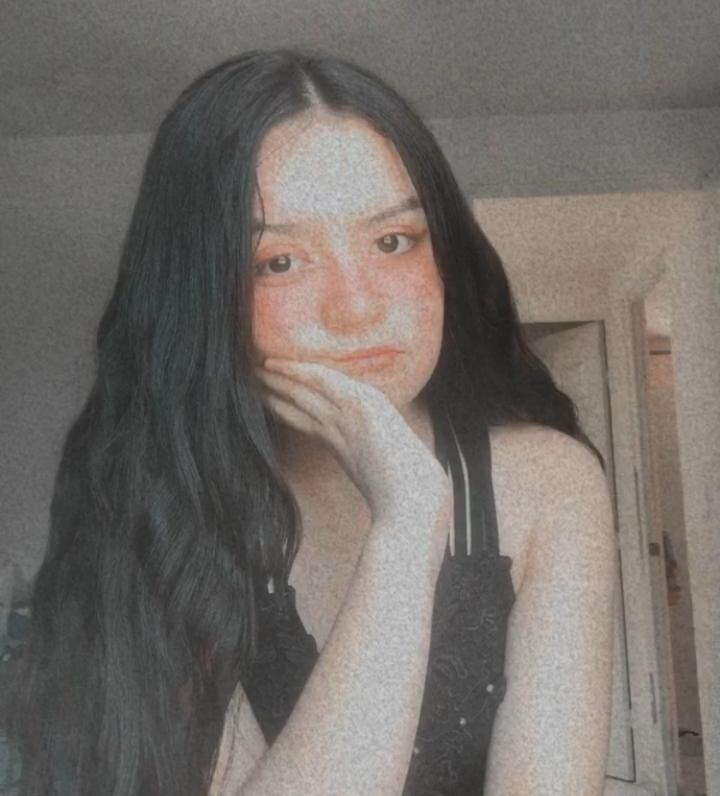

Menu

Mi Mejor Amigo.

Mi pana Santiago, el es mi mejor amigo, un pana muy fresco como se dice actualmente, lo conoci en la secundaria y desde ese tiempo nos apoyamos en todo, sin contar que me debe dinero de unas papas, pero el a estado conmigo en la buenas y en las malas, con mi inteligencia y su capacidad de saber de papos jajaja, salimos adelante juntos porque ahora aunque ya no nos vemos diario en la secundaria, aun seguimos siendo panas, aunque los dos somos politecnicos y seguiremos apoyandonos (Si lees esto pana, te quiero bro y cuentas con mi apoyo para cualquier cosa).
Mi Mejor Amiga.

Melisa mi querida amiga, a ella la conoci gracias al error de cambierme a la mañana pero gracias a ti no fue tanto un error, aunque llevamos poco tie´mpo de conocernos es muy chida diria yo la mejor, lo mejor era ir a las americas con ella pero con esta cuarentena ya no esta fresco, en conclusion te quiero mucho y gracias por apoyarme y siempre vas a contar conmigo en cualquier cosa.